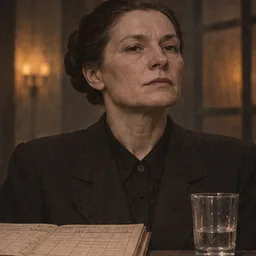
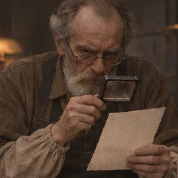
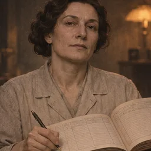
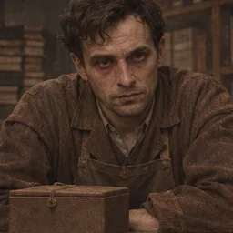

Книга ведущего · Промышленный и медицинский детективный нуар · 21+ · 3–8 игроков + ведущий
Белый пепел на манжетах
После смертельного пожара в заводской лаборатории взрослые рабочие теряют силы, работу и доверие друг к другу. Официальная сводка называет заболевание редким последствием одной аварии. Родственники просят независимую группу проверить даты: некоторые манжеты побелели задолго до огня.
Иллюстрация к первой встрече
Если партия изменила план
Перед чтением вступления сверьте место героев, присутствующих людей и предметы с итогом прошлого вечера. Если условия встречи отпали, сыграйте последствия там, где находится партия. Событие по расписанию может произойти за кадром. Герои узнают о нём от тех, кто был на месте.
Вечер 6. Если свидетели запретили отдавать оригиналы
Отметьте хранителя каждого экземпляра. Спросите, кто разрешает сверить подпись на месте. В последней сцене покажите, кто подтвердил получение предупреждения и какие имена остались за пределами публичной папки.
Группа отказалась от задания
Отказываемся расследовать пожар от имени заказчика. Списки больных не отдаём. Предложим независимой палате обезличенные сведения смен. Передаём палате обезличенную выборку смен. Палата принимает материалы в пределах согласия. Семьи сохраняют имена, вопрос о производстве остаётся открытым.
Игроки раскрыли тайну раньше
Сверим календарь смен с заключением независимой палаты и проверим дату вручения предупреждения. Доступные свидетельства — Календарь трёх смен, Результат независимой палаты. И жалобы, и совпадающий след Л-4 появились до пожара. Старую датировку можно опровергнуть независимо от имён работников. Сопоставляем до-пожарные даты в двух независимых записях. Отделяем подтверждённую связь с П-17 от знания конкретного начальника. Работники решают, кому дать свидетельство о вручении.
Партия уступила поле
Нас оттеснили от посетительской черты, ящик остался за дверью. Берём внешнюю расписку только за фактически принятую копию. Подаём копии и просим расписку внешнего хранения. Пока ящик не принят, полной описи в деле нет.
Карман ведущего
Для игры без подготовки: что говорят люди, места в стороне от главной дороги и прохожие. Пометки о правде слухов — только для ведущего; сказанное за столом становится фактом мира, лишь когда вы его подтвердите.
Слухи
«Заводских у нас узнают по белому налёту на манжетах. Раньше над этим посмеивались, а теперь никто не смеётся».
Правда. Так и говорят в Гальмере, это есть во вступлении кампании. Слух задаёт тон, но сам налёт ничего не доказывает и не служит диагнозом: даты важнее цвета.
«Белое с манжет берёт только дождевая вода, колодезная не отстирает. Потому хозяйки и ставят тазы под водостоки».
Неправда. Бытовое поверье прачек, к делу отношения не имеет. Подходит для реплики у водостока или в прачечной; никаких советов о здоровье за ним не стоит.
«Всё от пожара пошло. Дым тогда разнесло по всему участку, вот люди и слегли».
Неправда. Это удобная официальная версия, которую опровергают ранние записи: жалобы начались задолго до огня. Слух полезен в первом вечере как то, что группа будет проверять, и никого из живых не обвиняет.
«Что прошло через контору у трамвайного кольца, того уже не потерять. Можно только сделать вид, что не читал».
Правда. Местная поговорка о конторе регистрации отправлений. С её помощью группа выходит на реестр третьего вечера, но чьи подписи там стоят, слух не сообщает.
«Директорша обещала выяснить всё про аварию. У неё каждый приём расписан по минутам, значит, и слово своё сдержит».
Отчасти правда. Золина правда публично обещала выяснить последствия, и в дирекции время называют до минуты. Но точность расписания не делает обещание честным; что она знала и когда, группа устанавливает документами.
«В палату за рынком носят то, что не хотят показывать заводу. Там ни вывески, ни пропусков».
Правда. Независимая пробная палата действительно без заводских знаков и пропусков. Слух подсказывает, куда ведут номера из книжки Антона и описи, но содержания заключения не раскрывает.
«Мимо сгоревшей лаборатории в кепке не ходят. Огонь, говорят, запоминает тех, кто не снял шапку».
Неправда. Суеверие, выросшее из обычая почтить погибшего лаборанта: кепки снимают из уважения, а не от страха. Хорошая деталь для двора у опечатанного корпуса.
«Первый трамвай выходит из депо в половине шестого, и по нему встаёт весь Гальмер, хоть часов в доме и нет».
Правда. Так город и живёт, по сменам и трамваям. Слух помогает ведущему отмерять время утренних встреч в комнате взаимопомощи.
«Комиссия в старой управе заводским сводкам всегда верит. Принесёт завод красивую цифру — так и запишут».
Отчасти правда. Раньше комиссия и правда принимала сводки без разбора по группам, и Тамара Сольт это понимает. Теперь она требует происхождение, копию и согласие; слух объясняет недоверие работников к заседанию.
«В доме собраний каждый вешает жетон на щит, а уходя, снимает. По пустым крючкам видно, кто ушёл, не дослушав».
Правда. Старая привычка бывшей заводской столовой. Её удобно использовать, чтобы показать, кто остался спорить, а кто ушёл, никого за это не стыдя.
«Кто на здоровье пожалуется, того сразу переводят на участок без оплаты. Потому все и молчат».
Отчасти правда. Страх настоящий: Нелли скрывала ранние эпизоды именно из-за него. Но такого установленного правила на заводе нет; это опасение, а не приказ, и слух объясняет позднее молчание людей.
Места в стороне
Угольная пристань
Деревянные мостки на эстуарии, где баржи разгружают уголь для заводских котлов. Чёрная пыль лежит здесь на всём, даже на чайках, и после ливня по мосткам текут тёмные ручьи. Грузчики работают по гудку, а между баржами греются у бочки с огнём. Здесь говорят, что уголь с пристани оседает на мостовых всего города, и по блеску улиц после дождя угадывают, сколько барж пришло за неделю.
Газетный киоск у кольца
Зелёная будка у трамвайного кольца, обклеенная вчерашними заголовками. Вечерний выпуск привозят сюда раньше, чем в любой другой киоск, и очередь выстраивается к последнему вагону. Газетчик держит под прилавком подшивку за месяц и даёт её полистать за медяк. Фамилии в чёрной рамке он вырезает и прикалывает к стенке будки, пока не выцветут.
Прачечная на Мыльной улице
Низкое помещение с котлами и деревянными корытами, куда заводские семьи несут рабочие куртки и манжеты. Пар валит из открытой двери даже зимой, а на верёвках во дворе сушатся одинаковые серые халаты. Прачки помнят, чья манжета чья, по заплатам и меткам ниткой, и болтают о новостях громче, чем гремят котлы. Хозяйка берёт плату вперёд, но для вдов делает скидку.
Часовня у старой переправы
Крохотная каменная часовня на берегу, где раньше ходил паром. Внутри три скамьи и полка для свечей, а на стене дощечки с именами тех, кого унесла река или работа. Заводские приходят сюда перед долгой сменой и молча ставят свечу. После пожара на полке появилась новая дощечка, ещё без надписи, только с датой, вырезанной ножом.
Пивная «Последний вагон»
Тесная пивная напротив депо, открытая ровно до последнего трамвая: как только вагон звенит, хозяин гасит лампы. Здесь сидят вагоновожатые, грузчики и те, кому после смены не хочется домой. Над стойкой прибита жестяная табличка с номером списанного вагона, и вагоновожатые, уходя, стучат по ней костяшками на удачу. О заводе тут говорят много, но тихо и только за дальним столом.
Скамья под водостоком
Длинная скамья у стены переплётной мастерской, прямо под жестяным водостоком, в который в дождь гремит вода. Здесь ждут, пока наверху освободится комната взаимопомощи, и курят, пряча огонёк в ладонях. Переплётчик выставил сюда старую дверь вместо навеса, чтобы людей не заливало. На её изнанке кто-то мелом записывает расписание первого трамвая, и мел никто не стирает.
Прохожие
Фёкла Прачка
Крупная женщина с красными от горячей воды руками, в фартуке, мокром до колен, с бельевой корзиной на бедре.
«Пятно я любое выведу. А вот что человек в цеху надышал, того мне не отстирать».
Может рассказать: Знает, какие заводские семьи носят куртки в стирку каждую неделю, и может сказать, где на Мыльной улице живёт большинство сменщиков.
Кондратий Газетчик
Сухой старик в нарукавниках и вязаной шапке, с карандашом за ухом и подшивкой газет под мышкой.
«Свежий выпуск! Вчерашнее горе — за полцены!»
Может рассказать: Помнит, в какой день газеты впервые написали о пожаре, и даст полистать подшивку, чтобы проверить дату заметки.
Ульян Угольщик
Чёрный от угольной пыли грузчик с белыми зубами и мешковиной на плечах вместо плаща.
«Уголь всё помнит: где упал, там и лежит, пока дождь не смоет».
Может рассказать: Знает расписание барж у угольной пристани и в какие часы на мостках меньше всего лишних глаз.
Глаша из «Последнего вагона»
Бойкая подавальщица с подносом пустых кружек и полотенцем, перекинутым через плечо.
«Последний звонок — и по домам, я вам не ночлежка!»
Может рассказать: Знает, что вагоновожатые сидят в пивной до последнего трамвая, и кто из них возит первую утреннюю смену к заводу.
Порфирий Звонарь
Сутулый смотритель часовни у переправы, в длинном выцветшем пальто, с огарками свечей в кармане.
«Свечу ставят молча. Говорить будете потом, на берегу».
Может рассказать: Знает, что после пожара заводские стали приходить в часовню чаще, и покажет новую дощечку на стене.
Митя-вагоновожатый
Молодой вагоновожатый в форменной фуражке набекрень, с медным ключом от вагона на цепочке.
«До завода — без остановок, если не будете считать ворон!»
Может рассказать: Знает, что первый вагон к «Белой линии» выходит из депо в половине шестого и всегда полон до самых дверей.
За десять минут до первой игры
Откройте первый вечер, прочитайте правду мира и участников. Остальные вечера — планы, их исход решают игроки.
Выберите пакет под фактическое число игроков. Первые три героя — готовое ядро; остальные добавляются по порядку. Возраст игрока не определяет героя.
Согласуйте темы, длительность и сигнал паузы. Передайте игрокам только players.html; раздатки выдавайте по отдельности после указанного открытия.
Откройте Мастерскую проекта, создайте личный черновик и импортируйте выбранный JSON через загрузку пакета. Проверьте состав и начало в предпросмотре. Запуск кампании подтверждает ведущий штатным действием.
Откройте иллюстрацию завязки отдельно. Портреты героев входят в файл для игроков, портреты встречных — в книгу ведущего. Тактические схемы доступны в разделе карт.
8 вечеров; 180 минут: 15 минут вступления и повторения, три сцены по 45 минут, перерыв 15 минут и завершение 15 минут.
Гальмер — вымышленный промышленный город эпохи электрических трамваев, пишущих машинок и стеклянных фотопластинок. Завод «Белая линия» выпускает технические пластины. Все вещества, заболевания, учреждения и процедуры доказательств вымышлены. Канонические классы воина, плута, жреца и волшебника уровня 3 — механическая абстракция человеческих профессий; сверхъестественные способности выключены по умолчанию. Изменение этой условности требует явного согласия всей группы. Медицина, право и огнестрельное оружие не симулируются; проверки — игровые решения ведущего, не профессиональные советы.
Сдержанный нуар о труде, доверии к цифрам, заботе без обещаний и цене своевременного свидетельства. Дождь размывает уголь на мостовой, но не даты в чужом карманном календаре.
Осознанное продолжение опасной работы и рассеянная ответственность
Индивидуальный опыт против удобной сводной цифры
Горе взрослых родственников, стыд соучастия и неполная правда
Право на заработок, отказ от опасной работы и последствия огласки
Границы
Все действующие лица старше 21 года. Несовершеннолетних нет в сценах и материалах дела.
Без сексуальных сцен, сексуального насилия, подробностей ожогов, вскрытий и телесных повреждений. Погибший показан через вещи и воспоминания.
До игры отдельно согласовать болезнь, утрату трудоспособности, смерть близкого и давление работодателя. Любую из этих тем можно перенести за кадр без потери улик.
Не просить игроков рассказывать о собственном здоровье, семье или работе. Пауза, письменное решение и пропуск сцены доступны без объяснения.
Вымышленные образцы и симптомы не дают рецептов ядов, инструкций опасного производства, диагностики или лечения. Результаты анализа выдаются как готовые игровые документы.
Заболевший персонаж сохраняет право решать, кому рассказывать о своём состоянии. Согласие на личные сведения обсуждается отдельно от желания расследовать.
Люди за столом
Ведущий в начале каждого вечера напоминает границы; за столом присутствуют 3–8 игроков плюс ведущий. Первые три героя составляют самостоятельную группу: опрос, хронология и защита свидетелей доступны каждому.
Перед каждой сценой смените первого говорящего. Сначала по одному короткому предложению от желающих, затем общее решение; можно передать слово или написать свой выбор.
При разделении назначьте общий вопрос и точку встречи. Разрешайте параллельные действия блоками не более десяти минут и возвращайте всех к общему столу до выдачи итогового документа.
В группе 6–8 человек создайте пары: вопросы свидетелю, проверка дат, фиксация согласия и оценка издержек. Каждая пара приносит факт и сомнение; один игрок не получает постоянной роли докладчика.
Отсутствующий герой остаётся в комнате взаимопомощи. Его публичные заметки доступны с согласия игрока; личные решения, секреты и необратимые обещания за него не делают.
Базовые улики выдавайте за описанное доступное действие. Проверка меняет время, доверие или качество оформления, но не существование истины. Ошибочную версию записывайте отдельно от фактов и предлагайте проверяемое опровержение.
Если сцена болезни слишком тяжела, используйте карточку свидетельства и представителя по выбору НИП. Ни убедительность переживания, ни медицинский словарь игрока не заменяют доказательств.
Все будущие события условны. Ведущий заранее объявляет срок решения комиссии, но не запускает автоматические таймеры; по завершении вечера группа выбирает следующий шаг.
Масштабирование группы
3 игроков
Первые три героя ведут все линии. На сцену — один общий вопрос, один проверяющий даты и один собеседник; роли вращаются. Параллельные эпизоды идут короткими последовательными кадрами. Улики дополнительных героев доступны всей группе.
4 игроков
Добавьте роль хранителя согласий и копий. После двух выступлений передавайте инициативу молчавшему. В развилках разделяйтесь только на две пары и сходитесь у стола взаимопомощи.
5 игроков
Одна тройка беседует, пара проверяет хронологию. В следующей сцене поменяйте состав; пятый голос получает первое слово о цене решения. Не добавляйте обязательных свидетелей.
6 игроков
Три пары ведут инженерную, медицинскую и рабочую линии. По десять минут на ход пары, затем сверка на общей шкале времени; пары меняются линиями во второй половине вечера.
7 игроков
Три пары и сменяемый связной. Связной задаёт проверочный вопрос и выбирает, какие расхождения вынести всем, но не решает за отсутствующих. Каждая сцена заканчивается кругом из семи возможных голосов.
8 игроков
Четыре пары: три линии доказательств и условия защиты работников. Через сцену меняйте задачу каждой пары. На финальном обсуждении сначала восемь письменных приоритетов, затем два круга предложений; меньшинство сохраняет собственный эпилог.
Первое чтение вслух
Гальмер стоит на низких берегах эстуария, и в пять утра его ещё не отличить от реки: туман, дождь и угольный дым ложатся на мостовые одним серым слоем. Здесь живут по сменам, а не по часам. Первый трамвай выходит из депо в половине шестого, и к нему уже тянутся люди в рабочих пальто, с узелками и жестяными флягами, — к проходной завода «Белая линия», где делают технические пластины для чужих машин. В городе говорят, что у «Белой линии» белые не только пластины: заводских узнают по светлому налёту на манжетах, и раньше над этим беззлобно посмеивались. Шесть дней назад в заводской лаборатории случился пожар, и в нём погиб лаборант. С тех пор газеты пишут о несчастье и редких последствиях и спорят только о том, кто виноват в самом огне, а официальная сводка объясняет болезнь рабочих этим пожаром. Комната взаимопомощи помещается над переплётной мастерской; снизу пахнет клеем и кожей. Работники сняли её сами, вскладчину, чтобы встречаться без заводского пропуска. На верёвке у печки сушатся несколько пальто, с них капает на расстеленные газеты, на плитке шипит чайник. На большом столе лежат рабочая манжета, больничный талон и свежий номер городской газеты с чёрной рамкой вокруг имени погибшего лаборанта. На доске объявлений приколоты расписание трамваев и список тех, кто сегодня не вышел на смену. Женщина напротив вас прижимает к столу дрожащую ладонь; рядом лежит листок с заранее записанными вопросами. «Они говорят — после пожара. Найдите, с какого дня это слово стало удобным». За стеной звенит трамвай. До утренней смены ещё далеко.
Правда мира · только ведущему
Опасное воздействие связано с вымышленной сухой стадией П-17 производства пластин. Её ввели за одиннадцать недель до начала расследования; первые зафиксированные нарушения появились через три недели. Пожар произошёл лишь шесть дней назад и не создал первоначального воздействия. Ни реальные вещества, ни диагностические критерии здесь не подразумеваются.
Директор Варвара Золина и начальник производства Павел Рутков получили письменное предупреждение инженера Веры Невской за пять недель до расследования, обсудили его и сознательно сохранили стадию П-17 ради выполнения контракта. Золина рассчитывала перенести прекращение производства до расчёта с заказчиком; Рутков — получить повышение. Это фиксированные виновники решения, а не ответ на догадки игроков.
По распоряжению Золиной статистик Инга Сурина исключила отсутствующих по болезни вместе с их жалобами из числителя и знаменателя, затем добавила работников других участков без записанных жалоб. Было восемь обратившихся из двенадцати на П-17; исключили шесть отсутствующих с обращениями и добавили сорок других работников — стало два из сорока шести. Индивидуальные истории исчезли в удобном итоге. Инга знает о подмене выборки, но не видела сам процесс и не знает происхождения пожара.
Лаборант Северьян Караев, 46 лет, погиб при попытке сохранить контрольные образцы и переснять подлинные карточки перед назначенным уничтожением. Случайное возгорание возникло во время этой попытки; он не поджигал завод ради сокрытия болезни. Его намерение доказывают оставленные поручения и вынесенные до пожара материалы. Точную техническую причину и момент возгорания никто из свидетелей не видел.
Есть три самостоятельных пути доказать осведомлённость руководителей: инженерный — предупреждение, регистрация вручения и решение продолжать; медицинско-статистический — ранние карточки, правила исключения и визированная сводка; рабочий — сменные записи, квитанция независимого исследования и отметки руководителей о полученном результате. Ни один врач или свидетель не обладает всеми тремя цепочками.
Независимые сохранённые образцы позволяют подтвердить совпадение следов на П-17 с материалами, взятыми до пожара, только в рамках вымышленных правил этой истории. Они не обещают индивидуальный прогноз или лечение. Без этих образцов даты и осведомлённость всё ещё можно доказать документами и свидетельствами, но вопрос конкретного воздействия останется уже.
Золина согласится обсуждать прекращение П-17 с временной оплатой простоя лишь при сохранённой независимой копии дела и готовности работников подписать условия без отказа от свидетельств. Немедленная остановка также возможна через городскую комиссию. Ни один исход не гарантирует выздоровление, сохранение всех мест или наказание начальства; это зависит от действий группы и сохранённых доказательств.
Повороты сюжета
Только для ведущего. Сюжетные повороты держатся на мелочах, замеченных заранее: посейте их в названные вечера, а раскрытие отдайте героям, если они догадались раньше.
Пожар пришёл последним
Завод объясняет жалобы работников последствиями лабораторного пожара шестидневной давности. На деле стадию П-17 ввели за одиннадцать недель до расследования, и первые жалобы появились задолго до огня. Пожар ничего не начал — он только дал дирекции удобное объяснение.
Что посеять
Вечер 1. В календаре Нелли отмечены дни, когда ей становилось хуже, — и все эти дни раньше пожара.
Вечер 1. В книжке Антона просьбы о подмене на П-17 появляются за недели до огня, и на доске между ранней жалобой и пожаром остаётся пустой промежуток.
Поворот — вечер 2
В амбулатории Росанов выдаёт раннюю запись, сделанную за пятьдесят два дня до начала расследования, когда до пожара оставались недели. Пусть стол сам положит её рядом с календарём Нелли и поймёт, что пожар не может объяснить начало обращений. Если Нелли не дала согласия на свою карту, той же цели служат обезличенные даты врача.
Что меняется после
Версия о последствиях аварии больше не держится, и вопрос меняется: если вред начался раньше огня, кто знал о нём и почему стадия работала дальше. Расследование уходит от пожара к решениям людей.
Таблица, из которой ушли больные
Заводская сводка для амбулатории выглядит спокойной: два обращения из сорока шести. На деле на П-17 обратились восемь из двенадцати, а по письменному указанию директора шестерых отсутствующих с жалобами убрали из таблицы и добавили сорок работников других участков без жалоб. Отсутствие по болезни превратилось в выздоровление.
Что посеять
Вечер 1. Нелли говорит, что в её смене несколько взрослых коллег жаловались на похожие трудности, хотя заводская сводка выглядит спокойной.
Вечер 1. В книжке Антона видно, сколько людей с П-17 просили подмену в одни и те же недели.
Поворот — вечер 2
Инга раскладывает жетоны: двенадцать с П-17, восемь отмеченных, шесть убранных, сорок пустых добавленных — два из сорока шести. По просьбе показать основание она выдаёт «Указание о составе выборки» с подписью Золиной и ознакомлением Руткова. Пусть стол сам повторит подсчёт руками и поймёт, как исчезли люди. Если Инга не придёт, тот же номер сводки найдётся в архиве комиссии.
Что меняется после
Спокойная цифра стала уликой против тех, кто её заказал. Но таблица говорит, как считали, а не чем болели: дальше нужно доказать, что руководители знали о ранних случаях и всё равно сохранили план.
Лаборант выносил, а не жёг
Заводская газета пишет, что лаборант Северьян Караев сам устроил пожар, чтобы уничтожить улики. На деле он погиб, пытаясь спасти контрольные образцы и переснять подлинные карточки перед их назначенным уничтожением; ящик с материалами он вынес ещё утром. Возгорание было случайным, и точный его ход не видел никто.
Что посеять
Вечер 1. Леонид показывает газетный заголовок «Лаборант уничтожал улики» и просит не повторять его как установленный факт.
Вечер 3. В описи пожарного приёма перечислены спасённые копии, графа причины пуста, а номер внешнего ящика ведёт прочь от завода.
Поворот — вечер 4
Леонид даёт прочесть поручение из последней открытки брата: сохранить ящик и копии, номер, срок списания. В пробной палате Сара показывает журнал: ящик с тем же номером принят утром, а пожар случился вечером. Пусть стол сам сложит номера и поймёт, что Караев выносил материалы, а не жёг их. Если Леонид закрыл личную беседу, копия поручения лежит в комиссии.
Что меняется после
Имя погибшего можно очистить, но только в пределах доказанного: он спасал материалы, а причина огня неизвестна. Обвинение в заказном пожаре тоже снимается, и у дела остаётся одна прочная линия — знание руководителей.
Знали за тридцать семь дней
Дирекция держится за слова «никто не мог знать» и «вещество не названо». На деле инженер письменно предупредила руководство за пять недель до расследования, независимая палата за тридцать семь дней рекомендовала остановку, и оба руководителя согласовали продолжение смен ради расчёта по контракту. Вопрос не в веществе, а в решении.
Что посеять
Вечер 1. Антон вклеил в книжку номер отправления в независимую палату: работники отдали туда материалы ещё до пожара.
Вечер 3. Устов показывает две подписи о вручении письма Веры — Золиной и Руткова — и исходящий номер ответа, содержание которого надо запросить отдельно.
Поворот — вечер 4
По номеру из книжки Антона Сара выдаёт результат палаты, а потом переворачивает возвращённый сопроводительный лист: за тридцать семь дней до расследования оба руководителя получили рекомендацию остановки и согласовали продолжение смен до расчёта. Пусть стол сам поймёт, что знание доказано без всякого названия вещества. Если игроки пришли сюда раньше, не удерживайте этот поворот.
Что меняется после
Обвинение сужается и твердеет: предупреждение получено, процесс продолжен, учёт подправлен. Дальше дирекция будет спорить о выводах, а не о датах, и главной задачей станет уберечь доказательства и людей до заседания.
Досье дела · только ведущему
Кто и когда знал об опасности П-17, почему процесс продолжался и какие независимые материалы пережили попытку свести все жалобы к последнему пожару?
Виновник: Варвара Золина.
Золина хотела выполнить контракт до расчёта и избежать немедленного прекращения выручки, сохранив право самой определять серьёзность сообщений. Рутков сознательно поддержал решение ради обещанного повышения. Эти мотивы объясняют выбор, но не снимают ответственности и не делают болезнь необходимой ценой рабочих мест.
Человеческое управленческое преступление: продолжение вымышленной стадии П-17 после нескольких предупреждений, изменение состава медицинской сводки и продвижение удобной версии о пожаре как начале проблемы. Устройство производства, состав вещества, рецептуры и способы нанесения вреда не описываются. Случайный пожар возник во время попытки Караева спасти материалы; он не был источником первоначального воздействия.
Что произошло до начала игры
День −77. Запущена стадия П-17; это зафиксировано в сменном календаре и инженерных документах. Свидетели: Вера Невская, Павел Рутков, Нелли Векшина.
День −56. Нелли сделала первую запись о трудностях в работе. Это личное свидетельство о состоянии, не диагноз или доказательство причины. Свидетели: Нелли Векшина.
День −52. Росанов зарегистрировал раннее обращение работника П-17 и вопрос об условиях участка. Дата подтверждается архивом. Свидетели: Даниил Росанов, Инга Сурина.
Дни −41 и −40. На рабочем собрании решили передать материалы в независимую палату; Караев доставил образцы, палата зарегистрировала приём. Два события связаны номером отправления. Свидетели: Антон Белов, Нелли Векшина, Северьян Караев, Сара Лем.
Дни −39 и −37. Палата выдала ограниченное заключение Л-4 с требованием приостановки. Золина и Рутков получили его и вернули подписанный ответ: продолжить смены до расчёта. Подписи и даты — факты; их внутренние оправдания не выводятся из одной подписи. Свидетели: Сара Лем, Варвара Золина, Павел Рутков, Григорий Устов.
Дни −35 и −34. Невская направила отдельное инженерное предупреждение; контора зарегистрировала вручение обоим руководителям. Свидетели: Вера Невская, Григорий Устов, Варвара Золина, Павел Рутков.
День −32. Золина и Рутков подписали распоряжение продолжать П-17, прямо сославшись на полученное инженерное предупреждение. Свидетели: Варвара Золина, Павел Рутков.
Дни −28 и −27. Золина распорядилась изменить выборку, Рутков ознакомился, Инга исполнила. Два руководителя визировали сводку с замечанием об исключённых ранних обращениях и сохранении производственного плана. Свидетели: Варвара Золина, Павел Рутков, Инга Сурина.
День −7. Караев попросил брата сохранить ящик и копии перед списанием черновиков. Записка подтверждает намерение; мысль Леонида, что он мог предотвратить гибель, остаётся недоказанным чувством. Свидетели: Северьян Караев, Леонид Караев.
День −6, утро. Караев оформил внешнюю передачу контрольного ящика; время записано в журнале независимой палаты. Свидетели: Северьян Караев, Сара Лем.
День −6, вечер. Во время сохранения оставшихся копий в лаборатории возник случайный пожар, Караев погиб. Это фиксированная истина ведущего. Точный механизм возгорания и его момент не имеют надёжного очевидца и не могут стать уверенным показанием живого НИП. Свидетели: нет.
День −5. Заводская заметка представила пожар началом жалоб. Первичная муниципальная опись такой причинной связи не устанавливает. Свидетели: Варвара Золина, Павел Рутков, Леонид Караев.
Независимые пути доказательства
Предупреждение — вручение — решение
Содержание требования приостановки, независимая регистрация получения обоими начальниками и последующее распоряжение с прямой ссылкой образуют полную цепь сознательного продолжения. Сцены третьего вечера дают первые два звена; первый эпизод пятого — третье. Медицинские карты, образцы и признания руководителей для этой цепи не обязательны. Она доказывает сознательный риск, но не диагноз каждого работника.
Улики: Предупреждение Веры; Две подписи о вручении; Распоряжение после предупреждения.
Ранняя запись — изменённая выборка — виза
Архив устанавливает ранние обращения; письменное указание признаёт их концентрацию на П-17 и исключает часть данных; визированный полный экземпляр сводки связывает знание о скрытой группе с продолжением плана. Второй вечер открывает первые два звена, второй эпизод пятого даёт сводку. Калька «Строки, исчезнувшие на время болезни» делает подмену наглядной, но при её утрате журнал и правила позволяют восстановить расчёт. Врач не обязан устанавливать вещество или давать полное объяснение дела.
Улики: Ранняя амбулаторная запись; Указание о составе выборки; Виза под удобной сводкой.
Сменная память — внешний результат — возвращённый ответ
Рабочая книжка указывает на независимое отправление до пожара; заключение подтверждает содержание предупреждения по его номеру; внешний ответ с подписями обоих руководителей прямо сохраняет смены. Книжку получают в первом вечере, заключение и ответ — в третьей сцене четвёртого. Этот путь обходится без завода, инженерного письма и медицинского архива. Ограничение результата палаты остаётся видимым: совпадение вымышленного следа не даёт индивидуального прогноза.
Улики: Книжка подмен Антона; Результат независимой палаты; Возвращённый сопроводительный лист.
Подозреваемые
Варвара Золина
Сохранить выручку и контроль над оглаской до завершения контракта.
Три независимые цепочки показывают получение предупреждения, знание о ранних проблемах и сознательное продолжение; она же подписала правило выборки.
Слова «я доверяла специалистам», отсутствие точного названия вещества и отсутствие приказа устроить пожар недостаточны для оправдания сознательного продолжения. При этом документы действительно не доказывают, что она заказала пожар: такое лишнее обвинение следует снять.
Павел Рутков
Повышение за выполнение плана и сохранение начальственного положения.
Личные подписи о получении и на решениях продолжать исключают версию полной неосведомлённости.
Подчинённое положение не отменяет зафиксированного выбора. Однако его подпись ознакомления с правилом выборки сама по себе не доказывает, что он придумал подмену; авторство распоряжения принадлежит Золиной.
Инга Сурина
Сохранить место и спрятать собственную роль в красивой сводке.
Она подготовила чистовой итог и сначала не рассказала об исключённых строках.
Письменное правило и визы отделяют исполнение подмены от решения продолжать производство. Инга несёт ответственность за собственное действие, но не была тайным распорядителем П-17 и не имела данных о причине пожара.
Северьян Караев
Газетная версия намекает, что лаборант уничтожил следы своей ошибки.
Он остался в корпусе после окончания смены, а огонь повредил часть архива.
Допожарная внешняя передача, записка о сохранении и опись вынесенных копий противоречат версии уничтожения. Они подтверждают цель сохранения, хотя не позволяют восстановить каждую минуту случайного пожара.
Даниил Росанов
Скрыть позднее распознавание общего характера обращений.
Ранние карты не объединились в официальное предупреждение сразу; врач испытывает стыд и неохотно говорит о задержке.
Исходные даты и сохранённый запрос об условиях опровергают сознательное создание поздних карт. Его промедление остаётся предметом оценки, но правило подмены и производственные решения подписаны другими людьми.
Проверяемые ложные версии
Все проблемы начались из-за дыма лабораторного пожара.
Это опровергается сразу несколькими допожарными датами; ни вид манжеты, ни одна жалоба отдельно не объясняют вещество. Требовать совпадения трёх независимых дат полезно, но обязательного броска для их получения нет.
Проверка: Календарь трёх смен; Ранняя амбулаторная запись; Результат независимой палаты.
Караев намеренно сжёг архив, скрывая собственную вину.
Его записка и внешняя передача направлены на сохранение материалов. Первичная пожарная опись не поддерживает газетное утверждение о поджоге. Группа может снять обвинение, не притворяясь, что точно знает механизм возгорания.
Проверка: Последняя просьба лаборанта; Ящик, вынесенный до огня; Опись пожарного приёма; Журнал внешнего хранения.
Два обращения из сорока шести показывают, что рабочие преувеличили масштаб проблемы.
Это результат исключения шести обращавшихся вместе с их строками и добавления сорока других работников. Возврат к исходной группе даёт восемь из двенадцати; он доказывает несовместимость сводок, а не универсальное медицинское заключение.
Проверка: Строки, исчезнувшие на время болезни; Указание о составе выборки; Ранняя амбулаторная запись.
Если расследование зашло в тупик
При ложном обвинении Караева Леонид прекращает беседы, а часть работников отказывается от публичного имени. Записка остаётся доступной через комиссию; публичное исправление и возврат контроля над цитатами могут восстановить рабочее сотрудничество. Прощение не назначается наградой за бросок.
При потере одного документа используйте его конкретную внешнюю копию, названную в запасном пути этой улики; при потере целой цепочки две другие остаются самостоятельными. Если утеряны образцы, факт прежнего предупреждения доказывается документами, но прямую проверку сохранившегося материала нельзя объявлять состоявшейся.
При отказе Инги, Веры или Антона от разговора запрашивайте документ по номеру, берите добровольную ограниченную выписку либо выбирайте другую цепь. Нельзя вынуждать НИП раскрывать личную информацию проверкой Убеждения.
При неудаче на заседании Тамара перечисляет точный пробел: происхождение, копия или согласие. Группа подаёт дополнение либо сужает утверждение. Временное прекращение риска обсуждается отдельно от окончательной персональной ответственности.
Если переговоры о содержании сорвались, остаются независимое хранение дела, ходатайство об остановке и добровольная взаимопомощь. Ведущий не награждает продолжение опасной стадии гарантированным заработком и не обещает быстрое лечение за правильное моральное решение.
Восемь вечеров
1. Дата на белой манжете — Принять независимое поручение, установить допожарную хронологию и выбрать правила обращения с чужими историями.
2. Люди за пределами итога — Проверить даты обращений и разобрать, как изменение выборки превратило тревожную группу в спокойную цифру.
3. Вручено лично — Отделить отправленное предупреждение от доказанного вручения и проверить происхождение обвинений погибшего.
4. Ящик до пожара — Восстановить попытку сохранения материалов и перевести расследование от поиска вещества к доказательству осведомлённости руководителей.
5. Подписи после предупреждения — Завершить доступные независимые цепочки и сформулировать обвинение без недоказанных медицинских и пожарных утверждений.
6. Оригиналы остаются снаружи — Сохранить независимые образцы и добровольные показания так, чтобы допустимость материалов не зависела от единственного хранителя.
7. Цена тихих машин — Выработать решение об остановке с честно названной ценой и добровольным участием работников, не обменяв свидетельства на содержание.
8. Руки вне папки — Предъявить сохранённую цепь доказательств, защитить независимые материалы и выбрать исполнимое решение, затем прожить его несовпадающие человеческие последствия.
Места
Гальмер
Промышленный город на невысоких берегах эстуария, где река перед морем становится широкой и медленной. Дожди здесь длиннее газетных заголовков, а смены делят сутки точнее часов: по первому трамваю встают, по заводскому гудку обедают, по последнему вагону запирают двери. Уголь с барж оседает на мостовых, и после ливня улицы блестят, как мокрые фотопластинки.
Комната взаимопомощи
Комната над переплётной мастерской, которую взрослые работники снимают вскладчину. Снизу поднимается запах клея и кожи, у печки сушатся пальто, на большом столе всегда стоит чайник. На доске для объявлений приколоты расписания трамваев, списки дежурств и просьбы о подмене. Здесь можно встречаться без заводского пропуска, и дверь не запирают до последней смены.
Участок П-17 завода «Белая линия»
Закрытый производственный зал с высоким остеклением, сквозь которое днём видны ряды машин и косые полосы света. У входа — своя проходная и отдельная комната сменных записей с журналами на полке. Посетителей сопровождают по разрешённой галерее над залом, откуда слышен ровный гул и видно, как сменщики передают друг другу журналы.
Опечатанная лаборатория
Невысокий кирпичный корпус на краю заводского двора, с закопчённым окном и муниципальной пломбой на двери. Пахнет мокрой гарью и известью. Снаружи под навесом стоит временный стол приёма имущества: вещи и спасённые папки выдают по описи, родственникам — под подпись. Рабочие, проходя мимо, снимают кепки и не задерживаются.
Амбулатория на Кленовой
Городская амбулатория на тихой улице, названной по старым клёнам у входа. В вестибюле выдают жестяные номерки, на скамьях ждут работники в рабочих куртках, пахнет карболкой и мокрыми зонтами. Дальше — закрытый архив и отдельная комната бесед с плотной дверью. По коридору то и дело катят тележку с картами в картонных обложках.
Дом сменных собраний
Бывшая заводская столовая с длинными столами и окошком раздачи, заколоченным фанерой. Взрослые работники снимают её для собраний и спорят здесь вполголоса, чтобы не было слышно с улицы. На стене остался деревянный щит с крючками для жетонов: по старой привычке каждый пришедший вешает свой жетон, а уходя — снимает.
Контора регистрации отправлений
Городская контора у трамвайного кольца, где каждое письмо и каждая посылка получают номер, дату и подпись получателя. За деревянной стойкой стоят тяжёлые переплетённые реестры, пахнет сургучом и промокательной бумагой. В Гальмере говорят: что прошло через эту контору, того уже не потерять — можно только сделать вид, что не читал.
Независимая пробная палата
Маленькая договорная лаборатория в переулке за рынком, без заводской вывески и без заводских пропусков. У входа — приёмное окно с журналом на широких полях, за ним — комната свидетелей с двумя стульями и столом. Посетителям выдают письменные заключения без доступа к рабочим процедурам; в рабочие комнаты не пускают никого, кроме сотрудников палаты.
Дирекция «Белой линии»
Тихий административный корпус рядом с заводом, отделанный тёмным деревом; шум цехов доходит сюда только дрожью оконных стёкол. На столе секретаря стоят часы с недельным календарём, на стене в рамках висят образцы готовых пластин, сияющих, как зеркала. Посетители ждут на жёстком диване, а время приёма здесь называют с точностью до минуты.
Зал городской трудовой комиссии
Высокий зал старой городской управы с длинными скамьями, столом регистратора под зелёным сукном и боковой комнатой для закрытых свидетельств. Порядок выступлений вывешивают у двери на отдельном листе, и каждый может вписать в него оговорку. Под потолком гудят лампы, а скамьи стёрты до блеска поколениями тех, кто спорил здесь о сменах и оплате.
Нелли Векшина
42 лет. Льняная манжета под тёмным рукавом, ровный голос и заранее записанные вопросы. Работница участка П-17, участница комнаты взаимопомощи и одна из заявительниц.
Место: Комната взаимопомощи
Намерение
Чтобы её рассказ проверили, а дальнейшую работу обсуждали с ней, а не за неё.
Собственные знания
Записывала изменения самочувствия ещё до пожара.
В её смене несколько взрослых коллег жаловались на похожие трудности.
Караев просил сверить дату одной её записи, но не объяснил зачем.
Что говорит
При первой встрече. «Вы будете искать причину или доказывать, что нам показалось? Ответьте сразу — тогда и я решу, что вам рассказать».
О своём календаре. «Я записывала дни, когда становилось хуже. До пожара — вот, смотрите даты. Это мои дни, не чьи-то ещё».
О своём молчании. «Я скрывала, что мне плохо, — боялась перевода без оплаты. Теперь стыдно. Но стыд — не улика, запишите только даты».
О просьбе Караева. «Караев просил сверить одну мою запись. Не сказал зачем. Я тогда подумала — чудит лаборант».
О своём имени. «Если моё имя прозвучит на заседании — пусть. Но решать это буду я, а не тот, кто громче говорит».
После остановки участка. «Куда пойду, пока не знаю. Знаю, что завтра к семи на П-17 не надо — и это уже много».
Секрет или личное убеждение
Скрывала несколько ранних эпизодов слабости, опасаясь перевода без оплаты; сохранила личный календарь и теперь стыдится своего молчания.
Граница и раскрытие
Не разрешает называть себя больной на публичном собрании без отдельного согласия. Отказывается от демонстрации симптомов.
Даёт календарь после обещания вернуть оригинал и согласования имён в копии. Если не доверяет героям, передаёт обезличенные даты через амбулаторию; это не требует проверки.
Вера Невская
39 лет. Короткая стрижка, папка чертежей и значок допуска на простом шнурке. Инженер по качеству, подписывавшая технические замечания к стадии П-17.
Место: Участок П-17 завода «Белая линия»
Намерение
Сохранить точную формулировку предупреждения и не приписывать себе знаний о чужих заболеваниях.
Собственные знания
Отправила руководству предупреждение за пять недель до расследования.
Стадия П-17 работала после отправки предупреждения.
Не присутствовала при чтении письма директором и не знает, как начался пожар.
Что говорит
При первой встрече. «Я инженер по качеству. Я подписывала пластины, а не людей. Спрашивайте про письмо — про болезни я не знаю».
О предупреждении. «Я требовала приостановки. Письменно, с номером и адресатами, за пять недель до вас. Дальше — не мои подписи».
О своей вине. «После письма я продолжала подписывать качество. Убеждала себя, что изделие и условия труда — разные вопросы. Не разные».
Если просят объяснить процесс. «Как работает стадия, объяснять не буду. Вашему делу это не нужно, а в чужих руках опасно».
О чтении письма. «Как она читала письмо, я не видела. Знаю только, что его вручили и что П-17 работала дальше».
Секрет или личное убеждение
После своего предупреждения продолжала подписывать качество готовых пластин, убеждая себя, что качество изделия и условия труда — разные вопросы.
Граница и раскрытие
Не даст инструкции по процессу и не станет объявлять медицинскую причину. Требует отделять её подписи от подписей руководства.
Выдаёт собственную копию предупреждения при просьбе сверить дату и адресатов. При отказе говорить указывает номер официально зарегистрированного отправления; содержание доступно в регистрационном приложении.
Инга Сурина
34 лет. Тонкая цепочка для ключа архива, синие полосы копировальной бумаги на пальцах. Статистик, готовящая заводскую сводку для городской амбулатории.
Место: Амбулатория на Кленовой
Намерение
Сохранить работу и признать ровно ту часть подмены, которую совершила сама.
Собственные знания
Какие строки исключили из сводки и какое распоряжение это потребовало.
Кто визировал готовый документ.
Индивидуальные даты в архиве были раньше пожара; часть личных обстоятельств пациентов ей неизвестна.
Что говорит
При первой встрече. «Я статистик. Я считаю строки. Какие строки — мне говорят. В этот раз сказали письменно».
О подмене выборки. «Шестерых отсутствующих с жалобами убрала. Сорок человек с других участков добавила. Было восемь из двенадцати, стало два из сорока шести».
Об указании. «Вот основание. Подпись Золиной, ознакомление Руткова. Подпись видите — она не моя. Исполнение — моё».
О пределах таблицы. «Таблица говорит, как считали, а не чем люди болеют. Не просите у неё большего — и у меня тоже».
Об ответственности. «Не обещайте мне освобождения. Я сделала то, что сделала. Запишите ровно это».
О рабочей кальке. «Кальку я оставила себе. Не знаю зачем. Наверное, знала, что когда-нибудь спросят».
Секрет или личное убеждение
Исполнила письменное указание изменить выборку и оставила у себя рабочую кальку. Не знает, чем именно были вызваны жалобы, и не видела пожара.
Граница и раскрытие
Не отдаёт чужие имена без согласия и не принимает обещаний автоматического освобождения от ответственности.
Показывает правило выборки и кальку, если ей предлагают записать границы участия. При отказе говорить те же документы доступны по номеру приложения к сводке через комиссию.
Даниил Росанов
58 лет. Усталое лицо, чистый воротник, очки на открытой карте при каждом разговоре. Врач амбулатории, принимавший часть работников завода.
Место: Амбулатория на Кленовой
Намерение
Защитить пациентов и исправить собственное слишком позднее письменное обращение.
Собственные знания
Даты своих приёмов и записанные пациентами жалобы.
Он отправил вопрос о рабочих условиях, но не получил производственных данных.
Он не определял вещество и не знает, читала ли директор каждую карту.
Что говорит
При первой встрече. «Сначала договоримся, что вы увидите, а что нет. Объяснения болезни у меня нет, и придумывать его я не буду».
О ранней записи. «Пятьдесят два дня до вашего прихода — первая запись. Я её сделал. И отложил как отдельный случай».
О своём промедлении. «Я принимал их по одному и записывал по одному. Общую картину увидел поздно. Моя вина называется промедлением».
О запросе на завод. «Я спрашивал завод об условиях работы. Данных так и не получил — только вежливое письмо».
Если требуют назвать яд. «Вещества я не знаю и гадать не буду. Гадание врача хуже молчания — ему верят».
О прогнозах. «О том, что будет с конкретным человеком, я говорю только с ним самим. Не с вами и не с газетой».
Секрет или личное убеждение
Первоначально принимал жалобы по отдельности и недооценил общую хронологию. Его вина — промедление, а не тайное знание состава вещества.
Граница и раскрытие
Не обсуждает прогноз конкретного человека с посторонними; никаких процедур или лечебных рекомендаций за игровым столом.
С согласия пациентов даёт заверенные даты и формулировки своих сомнений. Без личного согласия выдаёт только обезличенную временную последовательность, достаточную для сопоставления с пожаром.
Варвара Золина

53 лет. Тёмный костюм без украшений, расписание приёмов и стакан остывшей воды. Директор «Белой линии», публично обещавшая выяснить последствия лабораторной аварии.
Место: Дирекция «Белой линии»
Намерение
Довести контракт до расчёта и удержать контроль над тем, что считается доказанным.
Собственные знания
Получала предупреждения до пожара и визировала продолжение П-17.
Сводка скрывает отдельные ранние случаи.
Выплата за простой возможна за счёт свободного заводского резерва лишь на ограниченный срок.
Что говорит
При первой встрече. «Заказчик ждёт партию, люди ждут жалованья, город ждёт объяснений. Я каждый день выбираю между плохим и плохим».
О пожаре. «Пожар я не заказывала, и вы это знаете. Всё остальное — вопрос толкования».
О полученном письме. «Письмо я получила. Получение — не причина. Вы до сих пор не можете назвать вещество».
О копиях. «Документы завода должны лежать на заводе. Верните копии — тогда поговорим о людях».
О первом предложении. «Остановка с момента подписи, половина заработка на четыре недели, взамен — тишина в газетах. Сейчас это лучшее, что может завод».
Уступая. «Строку о молчании уберу. Выплаты пусть проверяют со стороны. Резерв не бездонный — больше денег не будет».
Секрет или личное убеждение
Сознательно разрешила продолжать П-17 после независимого результата и предупреждения Веры; распорядилась изменить сводку. Не заказывала пожар и не знает его точной причины.
Граница и раскрытие
Не сознаётся ради красивой развязки. Обсуждает условия, когда понимает, что изъятие единственной папки уже ничего не исправит.
Её осведомлённость устанавливают документы и подписи независимо от ответов. На конкретную датированную копию она отвечает ограниченным признанием получения, оспаривая вывод об ответственности.
Павел Рутков
45 лет. Заводское пальто, отметки мелом на дощечке смен и привычка проверять часы собеседника. Начальник производства, отвечающий за исполнение сменного плана.
Место: Участок П-17 завода «Белая линия»
Намерение
Сохранить должность, представив себя исполнителем без возможности остановки.
Собственные знания
Когда началась П-17 и какие смены продолжали её после предупреждения.
Он подписал получение результата и распоряжение о продолжении.
Золина поручила ему подготовить ответ комиссии, но он не знает всех медицинских карт.
Что говорит
При первой встрече. «Сменный план утверждаю я. Останавливать участок — не я. Это разные подписи, запомните».
О письмах. «Письма здесь получают сотнями. Каждое второе — о сквозняках и графике. Все не упомнишь».
О трёх неделях. «Три недели — не вечность. Это срок контракта, я рассчитывал уложиться».
О своей подписи. «Да, моя подпись. Ознакомлен. Ознакомлен — не значит согласен, а согласен — не значит решил».
Если подходят к оборудованию. «К машинам — нет. Ни с пропуском, ни без. Хотите смотреть — смотрите на бумаги».
Об ответе комиссии. «Ответ комиссии мне поручили готовить. Медицинских карт я не видел. Писал то, что дали».
Секрет или личное убеждение
Читал предупреждения, поддержал продолжение процесса и лично утвердил ещё три недели смен. Возможность остановить участок у него была; обещанное повышение мотивировало промедление.
Граница и раскрытие
Не допускает игроков к оборудованию. Может отказать в беседе, но не превращает любой вопрос в драку.
Сравнение его распоряжения с журналом смен лишает силы версию простого незнания. Если он отказывается отвечать, те же даты подтверждает экземпляр распоряжения в конторе регистрации.
Григорий Устов

61 лет. Нарукавники, квадратная лупа и совершенно сухая промокательная бумага. Регистратор отправлений, заверяющий вручение заводских и частных писем.
Место: Контора регистрации отправлений
Намерение
Чтобы его запись использовали только для подтверждения передачи, а не как догадку о содержании чужой головы.
Собственные знания
Номера, даты, описания вложений и подписи получателей в своём реестре.
Один сопроводительный лист вернули с ответом дирекции.
Он не присутствовал на заводских совещаниях и не может поставить диагноз.
Что говорит
При первой встрече. «Я подтверждаю, что бумага дошла и кто за неё расписался. Что человек подумал, взяв её в руки, в мой реестр не вписывают».
О вложении. «Важнее, какое вложение вы называете. Номер без вложения — пустой конверт».
О двух подписях. «Вручено лично. Две подписи — Золина и Рутков. Почерк обычный, я сверял с прежними получениями».
О переплёте. «Переплёт отсюда не выходит. Страницу заверю, с печатью и своей подписью».
Об ответе дирекции. «Ответ ушёл под своим номером. Содержание выдают по отдельному заявлению — вот бланк, порядок обычный».
Когда ему начинают доверять. «Меня как-то просили переписать описание вложений. Я отказал — письменно. И больше никому не говорил. Вы первые».
Секрет или личное убеждение
Замечал просьбы заводской конторы менять описание вложений, но отказал лишь письменно и никому больше не рассказал.
Граница и раскрытие
Не отдаёт переплёт и чужую переписку целиком; делает относящуюся к делу заверенную выписку.
По номеру отправления или имени отправителя позволяет сверить строки под наблюдением. Ошибка номера стоит времени, но поиск по неделе и адресату всё равно находит нужную запись.
Сара Лем

48 лет. Простой халат без знаков завода, журнал приёма с широкими полями. Исследовательница независимой пробной палаты, отвечающая за принятие и описание образцов.
Место: Независимая пробная палата
Намерение
Сохранить проверяемую цепочку хранения и не дать превратить ограниченный результат в обещание лечения.
Собственные знания
Когда приняли образцы Караева и какие условные метки совпали в вымышленном анализе.
В палате хранится экземпляр заключения и возвращённого сопроводительного листа.
Она не знает индивидуальных медицинских исходов и не видела принятия производственного решения.
Что говорит
При первой встрече. «Мы принимаем по номеру, а не по фамилии. Номер на бирке и номер в журнале — вот вся наша память, и она не горит».
О пределах результата. «Сперва — чего это заключение не говорит. Л-4 — условная метка, не имя болезни и не приговор человеку».
О своей ошибке. «Мне ответили, что рассмотрят. Я сочла это обещанием и больше ничего не сделала. Это мне тоже придётся записать».
О ящике Караева. «Ящик поступил утром, пожар случился вечером. Номер на бирке — его. Вот строка в журнале».
Если требуют оригиналы. «Оригиналы останутся здесь, под пломбой. Копии ваши — так никто не назовёт их подменёнными».
О заявке на возврат. «Возражение приму письменно. Вещи останутся здесь до сверки — так записано в журнале».
Секрет или личное убеждение
Выдала тревожное заключение до пожара, но приняла заводской ответ о внутреннем рассмотрении и не добилась внешней проверки.
Граница и раскрытие
Не раскрывает реальную методику и не называет вещество из действительного мира. Не обещает, что образец доказывает состояние каждого человека.
Показывает ограниченный результат вместе с журналом приёма по просьбе сверить происхождение. Если спорят с её авторитетом, предлагает письменные первичные номера и наблюдаемую сверку, а не обязательное доверие к себе.
Леонид Караев

41 лет. Куртка переплётчика, маленькая коробка для возвращаемых вещей и красные от недосыпа глаза. Брат погибшего лаборанта, получающий личные вещи по описи.
Место: Опечатанная лаборатория
Намерение
Узнать, что делал брат, и прекратить разговоры о его виновности без подмены правды утешением.
Собственные знания
Точное содержание последней записки брата.
Какие вещи вынесли до пожара и какие вернули после.
Он не был внутри лаборатории и не видел возгорания.
Что говорит
При первой встрече. «В заводской газете написали, будто Сева сам устроил пожар. Не повторяйте это как правду. Я не знаю, что там было, — и они не знают».
О брате. «Сева нумеровал всё — коробки, банки с гвоздями, даже письма ко мне. Номер на открытке он поставил не просто так».
О своей вине. «Он просил забрать коробку за день до пожара. Я отложил. Если бы я пришёл, он был бы жив».
О личной половине открытки. «Личную половину оставлю себе. Там не про завод — там про нас».
Если просят простить руководство. «Простить их? Нет. И не просите меня об этом при людях — я встану и уйду».
В конце. «Пусть напишут, что он выносил материалы. Остальное я оставлю себе».
Секрет или личное убеждение
Получил просьбу забрать коробку за день до пожара, но отложил встречу. Считает, что мог спасти брата; это его чувство, а не установленный факт.
Граница и раскрытие
Отказывается от инсценировки смерти и не терпит просьбы публично простить руководство.
Передаёт записку при согласии различать намерение сохранить материалы и точную причину пожара. При конфликте оставляет её комиссии, откуда доступна копия без новой беседы.
Антон Белов
36 лет. Вязаный жилет под рабочим пиджаком, карманная книжка с продавленной обложкой. Рабочий вечерней смены и добровольный составитель расписания подмен.
Место: Дом сменных собраний
Намерение
Остановить опасную работу, не оставив соседей по смене без средств на ближайший месяц.
Собственные знания
Кто менял смены и в какие даты появились просьбы о подмене.
Он присутствовал на рабочем собрании до пожара и видел возвращённую квитанцию.
Он не читал технических расчётов и не знает намерений директора.
Что говорит
При первой встрече. «Пока жетон висит на щите, человек считается на собрании. Мой висит. Спрашивайте».
О старой реплике. «Я говорил им выспаться. Тогда казалось, что люди просто устали. Теперь эта строчка читается так, будто мне было всё равно».
О номере отправления. «Номер я вклеил сам. Мы тогда решили отдать материалы в палату, и все, кто был, подписались».
О заработке. «Я боюсь остаться без денег. Это не значит, что я согласен болеть, — так и запишите».
О подписи за всех. «За всю смену я не подпишу. Подпишу за себя. Остальные пусть подходят сами».
О четырёх неделях. «Четыре недели — это не цена. Цена начнётся, когда они кончатся».
Секрет или личное убеждение
Раньше называл жалобы коллег преувеличением и теперь боится, что его записи прочитают как свидетельство равнодушия.
Граница и раскрытие
Не подписывает документ от лица всех работников и не называет согласие большинства разрешением раскрыть чужую карту.
Даёт книжку, если сохранить и неудобные для него реплики, и исправления. Если боится выступать, подписывает ограниченную выписку о датах подмен без оценки здоровья коллег.
Тамара Сольт
57 лет. Городской служебный жакет, папка с пустыми бланками и негромкая манера говорить. Регистратор и докладчица городской трудовой комиссии.
Место: Зал городской трудовой комиссии
Намерение
Получить проверяемое дело и исполнимое временное решение, не заменяя расследование впечатлением от выступления.
Собственные знания
Вымышленные правила приёма материалов: происхождение, сохранённая копия, добровольность и границы свидетельства.
Комиссия может приостановить П-17 на время рассмотрения при наличии подтверждённого текущего риска.
Она не знает содержания ещё не переданных доказательств и не обещает исход дела.
Что говорит
При первой встрече. «Требования одинаковые для обеих сторон: происхождение, независимый экземпляр, добровольность и границы свидетельства».
О пропусках в цепи. «Пропуск так и пишите — пропуск. Дополнение приму. Красивую цепь без звена — нет».
О личных картах. «Чужую карту без согласия не приму. Даже если она всё объясняет. Особенно если всё объясняет».
О своей ответственности. «Комиссия раньше принимала заводские сводки целиком, не разбирая. Это и наша ошибка, и я её помню».
О большинстве. «Большинство может решить, куда идти. Чьё имя прозвучит — решать не ему».
О временном распоряжении. «Временное распоряжение приму, если риск подтверждён. Наказание — отдельное дело, и не сегодняшнее».
Секрет или личное убеждение
Комиссия раньше принимала заводские сводки без разложения на группы; Тамара понимает, что это касается и её профессиональной ответственности.
Граница и раскрытие
Не принимает чужую личную карту без согласия и не выдаёт предварительный приём за установление вины.
Заранее сообщает одинаковые требования обеим сторонам и позволяет исправить недостающую отметку через дополнительную запись. Потеря формы не меняет установленную историческую истину.
Северьян Караев
46 лет. На прижизненном служебном портрете — взрослый мужчина в лабораторном халате и круглых очках. Лаборант, погибший при недавнем пожаре. В настоящем времени появляется только через документы и чужие воспоминания.
Место: Опечатанная лаборатория
Намерение
При жизни хотел сохранить проверяемые материалы и передать их за пределы заводской дирекции.
Собственные знания
При жизни знал номера собранных им образцов и даты их передачи в независимую палату.
Знал о предстоящем уничтожении черновых карточек.
Не знал будущего исхода расследования и не оставил всеведущего завещания.
Что говорит
Из последней открытки. В открытке брату — только поручение: сохранить ящик и копии, номер бирки, срок списания. Леонид прикрывает остальное ладонью: «Это личное, это не для дела».
Со слов Леонида. Леонид вспоминает: «Сева нумеровал всё — коробки, банки с гвоздями, даже письма ко мне».
Из журнала палаты. Его ящик записан в журнале по номеру, а не по фамилии. Сара показывает строку: «Ящик принят утром. Пожар был вечером».
Со слов Нелли. Нелли вспоминает его единственную просьбу: «Сверьте, пожалуйста, вот эту дату», — и ни слова объяснения.
Из описи пожарного приёма. В описи напротив его имени перечислены спасённые копии, а графа причины пуста. Служащий под навесом читает: «Причина не установлена. Так и написано».
Секрет или личное убеждение
Перед гибелью пытался спасти образцы и копии карточек от назначенного уничтожения. Это установленное прошлое намерение; точный момент случайного возгорания не описан достоверным свидетелем.
Граница и раскрытие
Никакого разговора с умершим, видения, реконструкции мыслей или обязательного осмотра тела. Воспоминание сообщает только опыт живого рассказчика.
Его намерение подтверждается запиской, внешним журналом и описью вынесенного ящика. Каждый документ доступен без попытки говорить с погибшим; ни один не даёт ответа о всех действиях руководства.
Возможные финалы
Красная пломба
Условия: Группа сохраняет независимую копию хотя бы одной полной цепочки осведомлённости, передаёт её комиссии с согласованными свидетельствами и требует немедленного прекращения П-17.
Комиссия может приостановить стадию П-17 до рассмотрения, а независимые материалы остаются вне завода. Игроки выбирают, кто выступит публично и кто останется под защитой. Дело о личной ответственности продолжается после эпилога.
Цена: Первая выплата за простой не гарантирована. Часть работников обвиняет расследователей в потере заработка; героям предстоит добиваться помощи без обещания быстрого исцеления.
Эпилог — читать вслух
На дверях участка П-17 висит красная пломба комиссии. Стадию приостановили до рассмотрения, и в сухом цехе впервые за одиннадцать недель тихо. Независимые материалы лежат вне завода — в шкафу пробной палаты и в архиве комиссии, — и ни одна заявка на возврат до них не дотянется. Кто-то из свидетелей выступил открыто, кто-то остался в закрытом приложении, и оба выбора записаны с одинаковым уважением. Дело о личной ответственности Золиной и Руткова продолжается, и чем оно кончится, не обещает никто. Первая выплата за простой не пришла. У проходной часть работников ругает расследователей вслух: без смен нечем платить за комнаты, и правда не кормит. Герои ходят по конторам, добиваются у комиссии ускоренного решения о содержании, собирают в комнате взаимопомощи то, что можно собрать. Никто не обещает быстрого исцеления — ни врач, ни комиссия, ни они сами. Нелли по привычке приходит к проходной в семь утра, смотрит на красную пломбу и уходит домой. Леонид ставит коробку брата на полку переплётной мастерской, номером наружу.
Оплаченная тишина машин
Условия: Есть независимая копия доказательств, письменное прекращение П-17 с немедленного момента, проверяемое временное содержание работников и их добровольное согласие; отказ от показаний не включён в условия.
Завод принимает ограниченное соглашение о простое и внешнем хранении образцов. Группа сама решает, подписывать ли его до публичного заседания. Рассмотрение ответственности не закрывается, но скорость огласки снижается.
Цена: Соглашение уязвимо к нарушению и охватывает только согласившихся работников. За контроль выплат и соблюдение остановки придётся отвечать людям, которые уже устали; полного сохранения рабочих мест никто не обещает.
Эпилог — читать вслух
Машины П-17 стоят с той минуты, как высохли подписи. Соглашение ограниченное: половина заработка на четыре недели из заводского резерва, внешний наблюдатель за выплатами, образцы и копии в независимом хранении. Строки об отказе от показаний в нём нет — её вычеркнули при всех. Рассмотрение ответственности не закрыто, но идёт тише, чем шло бы после громкого заседания, и газета пишет о заводе всё реже. Первая выплата приходит в срок — или опаздывает на день, и тогда кто-то из героев идёт в дирекцию с копией соглашения в руке. Соглашение охватывает только тех, кто его подписал. Несогласные ищут работу сами, и никто не вправе их упрекнуть. Следить за остановкой и выплатами приходится людям, которые и так устали: каждую неделю — к проходной, каждую пятницу — к кассе. Полного сохранения рабочих мест никто не обещал, и через четыре недели вопрос встанет снова. Антон ведёт в своей продавленной книжке новый столбец — выплаты — и подчёркивает каждую пропущенную дату. Пока подчёркиваний нет.
Город слышит имена
Условия: Группа предпочитает огласку, получает отдельное согласие на личные истории и распространяет проверяемые выдержки с указанием границ доказанного.
Независимое дело становится публичным; скрыть расхождение дат уже нельзя. Комиссия обязуется открыть рассмотрение, однако сама публикация не останавливает П-17: для этого группа должна добиться отдельного распоряжения или соглашения.
Цена: Открытые свидетели теряют анонимность и могут лишиться работы. Ошибочное обвинение Караева, если его не исправили, остаётся в памяти города рядом с обнародованной правдой.
Эпилог — читать вслух
Гальмер читает о стадии П-17 в выдержках, которые нельзя опровергнуть: даты, номера, подписи, правило выборки, превратившее восемь из двенадцати в два из сорока шести. Каждая личная история напечатана только с отдельного согласия и с указанием границ доказанного. Скрыть расхождение дат уже нельзя, и комиссия обязуется открыть рассмотрение. Но публикация сама машин не останавливает: если отдельного распоряжения или соглашения не было, П-17 работает и в день выхода газеты. Открытые свидетели теряют анонимность. Нелли узнают у проходной, и не все узнающие доброжелательны; кому-то из выступивших отказывают в следующей смене. Если газетное обвинение Караева не исправили вовремя, оно стоит в памяти города рядом с правдой, и Леонид натыкается на него на каждой второй скамейке. Герои решают, что делать с этой известностью: защищать тех, кто вышел из тени, добиваться остановки отдельным путём или просто быть рядом. Золина даёт интервью о трудном положении завода. Её фотографию в газете кто-то у проходной аккуратно переворачивает лицом вниз.
Папка с недостающей страницей
Условия: Группа сохраняет только часть доказательств либо отказывается от публичного выступления ради согласия свидетелей, не передавая единственные экземпляры заводскому начальству.
Можно доказать раннее начало жалоб и оспорить сводку, но персональная осведомлённость ещё не подтверждена целиком. Герои выбирают, продолжить ли дело меньшими силами; ни оправдание директора, ни поражение расследования не объявляются автоматически.
Цена: Опасная стадия может продолжаться до нового решения, а работникам приходится самостоятельно выбирать уход с участка. Сохранение доверия оплачено временем; ведущий честно перечисляет недоказанные звенья.
Эпилог — читать вслух
Дело собрано не целиком. Раннее начало жалоб доказано, удобную сводку можно оспорить, но персональная осведомлённость руководителей подтверждена только частично: одной страницы в папке не хватает, и все знают какой. Единственные экземпляры не отданы заводу — это главное, что удалось сохранить. Кто-то из свидетелей отказался выступать публично, и группа это приняла, заплатив временем. Ни директора, ни расследование никто не объявляет победителем. Опасная стадия может работать до нового решения, и работникам приходится самим выбирать, уходить ли с участка: кто-то просит перевода, кто-то увольняется, кто-то остаётся, потому что больше негде. Герои решают, продолжать ли дело меньшими силами. Если продолжают, им есть с чего начать: номера, копии, люди, согласившиеся говорить закрыто. Тамара Сольт держит номер дела открытым и не закроет его без нового запроса. Вера Невская по-прежнему подписывает качество пластин, но каждый раз задерживает ручку над строкой чуть дольше, чем раньше. Недоказанные звенья перечислены на отдельном листе, и этот лист прикреплён к обложке.
Раздатки · выдавать постепенно
Выписка из календаря смен — После согласованного сопоставления «Календаря трёх смен» в первом вечере; имена заменены обозначениями по решению владельцев.
Два способа получить одну сводку — После изучения «Ранней амбулаторной записи» и «Строк, исчезнувших на время болезни» во втором вечере; выдать обезличенный лист даже без согласия на раскрытие имён.
Письмо Невской, регистрация В-173 — Когда герои получают «Предупреждение Веры» непосредственно или через регистрационное приложение в третьем вечере.
Выписка о вручении и ответе — После «Двух подписей о вручении» в третьем вечере; содержание ответа И-176 этим листом не раскрывается.
Заключение пробной палаты Л-4 — Когда получен «Результат независимой палаты» в четвёртом вечере; сведения о личных заболеваниях в этот лист не входят.
Не выбрасывай коробку — После добровольной передачи «Последней просьбы лаборанта» Леонидом либо получения закрытой копии в четвёртом вечере.
Даты знания и даты решений — В пятом вечере после завершения любой доказательной цепочки. Ведущий закрывает строки тех документов, которых группа ещё не получила; заголовок не является новым доказательством.
Лист независимого приёма — После знакомства с «Правилами приёма независимого дела» и сверки «Журнала внешнего хранения» в шестом вечере; передавать незаполненные поля для реального решения игроков.
Первое предложение дирекции — В седьмом вечере, если дирекция согласилась говорить после сохранения независимых материалов; без этого выдать только объявленное предложение остановки комиссии, описанное в сцене.
Карточка последнего решения — В восьмом вечере перед выбором окончательного обращения; не выдавать как готовое распоряжение или предопределённую победу.
Как читать игровые проверки
Проверки характеристик и навыков, переговоры, часы и последствия из книги разрешает ведущий. Они не являются дополнительными автоматическими правилами приложения. Улики доступны без обязательного успешного броска. Подготовленные встречи начинаются только по решению ведущего; исходы и эпилоги заранее не записаны.
Когда свидетель готов говорить
Знание NPC не означает готовность раскрыть его при первом вопросе. В пакете свидетельства закрыты; ведущий использует условия раскрытия в карточке NPC и штатные действия для согласованных открытий. Независимые предметные улики доступны через осмотр, поэтому отказ свидетеля не блокирует расследование.
Статус подготовки
Авторская кампания подготовлена отдельным агентом, запрошенным как GPT-6 Astra / max. Проверки пакетов и игровых границ описаны в verification.json и общем отчёте. Живой плейтест с людьми ещё не проведён. Локальная папка с исходниками и книгой предназначена ведущему.